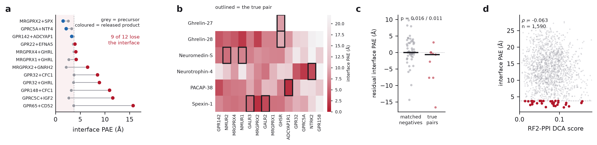
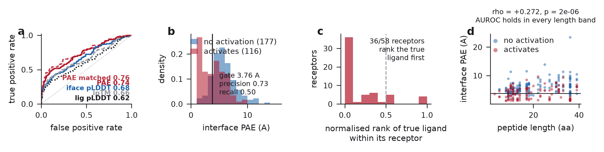

Agentic triage of AlphaFold3-predicted interactions against real biological evidence.
A confident fold is not an interaction. chaperone takes a predicted pair, has an agent assemble orthogonal evidence from six databases, and then hands the judgement to fixed code, because an agent that both assembles evidence and judges it will rationalise the hypothesis it was given.
68 candidates across both arms: 62 protein pairs, and the 6 receptor–molecule pairs the calibrated small-molecule gate admits.
| verdict | n |
|---|---|
| Confirmed novel | 19 |
| Insufficient evidence | 17 |
| Likely artefact (PTM/glycan) | 17 |
| Likely promiscuous pocket | 6 |
| Implausible | 5 |
| Likely subcomplex | 4 |
The protein count was 57 until 2026-11-25. Lowering the clash floor from 1.5 to 0.5 Å admitted five more pairs, which were triaged in a run of their own; the assembler’s list of source runs was hardcoded and that run was not on it. One of the five is a confirmed candidate, GPR22 + SLITRK2 at interface PAE 2.86, better than 50 of the 57 pairs that were already in the table. The assembler now refuses to write when the current gate admits a pair that no run has triaged.
283 folds. Each pair appears three times: as every product UniProt annotates, as the unmodified precursor, and as a decoy cut — the same number of residues removed from the same terminus, at a boundary away from any annotated cleavage site. The decoy is what separates cut to the right molecule from cut at all, and it is what the first refold lacked.
Seven textbook receptor–hormone pairs were folded as their precursor so they could be paired against the mature products already in hand. Every one improves when cut to its own product, by a median of 3.30 Å.
| pair | precursor | product | change |
|---|---|---|---|
| GALR3 + SPX | 7.62 | 4.19 | -3.43 |
| GHSR + GHRL | 10.12 | 8.71 | -1.41 |
| GALR2 + SPX | 10.26 | 3.14 | -7.12 |
| NMUR2 + NMS | 7.19 | 5.68 | -1.51 |
| NMUR1 + NMS | 10.20 | 6.90 | -3.30 |
| ADCYAP1R1 + ADCYAP1 | 1.59 | 1.44 | -0.15 |
| NTRK2 + NTF4 | 11.42 | 3.27 | -8.15 |
This reverses what this page said earlier. It reported that four of seven textbook pairs fail the gate as their mature product, which is true, and concluded that a loss on refolding was uninterpretable. They fail the gate; not one of them gets worse. So a candidate that degrades as its own released product is doing something no real pair here does.
Each clears the 3.76 Å gate as the peptide the cell secretes on the pooled evidence of three seeds, beats its own precursor, and is not matched by a decoy cut of identical length. They are the direction no post-hoc test on a shortlist could reach, because none of them was on one. Every structure is in the viewer, as a triple.
| pair and molecule | product | precursor | decoy | 3 seeds |
|---|---|---|---|---|
| GPR39 + FGAFibrinopeptide A, 16 aa | 2.42 | 17.15 | 16.57 | 2.37 |
| GPR39 + FGBFibrinopeptide B, 14 aa | 2.93 | 5.65 | 9.76 | 2.93 |
| GPR45 + CCKCholecystokinin-8, 8 aa | 2.96 | 4.96 | 5.52 | 2.96 |
| GPR65 + CCL23CCL23(27-99), 73 aa | 3.16 | 3.74 | 4.44 | 2.62 |
| GPR4 + CTSGCathepsin G, C-terminal truncated form, 223 aa | 3.27 | 4.14 | 8.76 | 3.24 |
| GPR152 + GHRLObestatin, 23 aa | 3.38 | 3.77 | 4.26 | 3.38 |
| MRGPRX2 + SSTSomatostatin-14, 14 aa | 3.38 | 4.31 | 5.28 | 3.08 |
| GPR152 + PF4Platelet factor 4, short form, 54 aa | 3.39 | 4.77 | 8.07 | 3.39 |
| MRGPRX2 + GASTGastrin-6, 6 aa | 3.44 | 5.38 | 4.92 | 3.42 |
| MRGPRF + VEGFCVascular endothelial growth factor C, 116 aa | 3.53 | 3.78 | 13.52 | 1.95 |
One seed is a screen. AlphaFold3 docking splits by seed, and two of this arm's own product folds straddle the gate within a single seed, so a pair that clears on seed 1 and nowhere else has cleared nothing. All 11 pairs that cleared on the first pass were re-folded on seeds 2 and 3 together with their precursor and their decoy, from the same inputs, with nothing changed but the seed. 10 held. GPR33 + CFC1 did not: its precursor caught up, so it is not refuted, which is exactly what a one-seed screen cannot tell you.
GPR39 + fibrinopeptide A is the clearest. The precursor sits at 17.15 Å and the 16-residue released peptide at 2.42, while a decoy removing the same number of residues elsewhere stays at 16.57. A 14.73 Å move that an arbitrary cut does not reproduce is not the cut doing the work.
To retire, a pair has to be worse than the worst known true pair folded as its own mature product (9.79 Å, GHSR + ghrelin-28) and worse than its own decoy — the real molecule doing worse than an arbitrary cut of the same size.
| pair and molecule | product | precursor | decoy |
|---|---|---|---|
| GPR37 + EFNA4Ephrin-A4, 145 aa | 10.12 | 5.22 | 5.92 |
| GPR32 + INHAInhibin alpha chain, 134 aa | 10.44 | 5.57 | 10.09 |
| MRGPRD + BMP6Bone morphogenetic protein 6, 139 aa | 11.36 | 6.25 | 11.18 |
| GPR37L1 + GFRA3GDNF family receptor alpha-3, 343 aa | 11.67 | 2.61 | 3.01 |
| MAS1L + TDGF1Protein Cripto, 120 aa | 14.15 | 4.23 | 4.41 |
| MAS1L + CALCBCalcitonin gene-related peptide 2, 37 aa | 20.05 | 5.02 | 5.22 |
| GPR31 + BMP6Bone morphogenetic protein 6, 139 aa | 21.36 | 5.18 | 2.57 |
The rule changed, and it was too strict before. The second clause used to ask for a product-minus-precursor move larger than +12.22 Å, the observed maximum of an aggregate cut null. That bar could not fire: the median move on this arm is +0.19 Å, so nothing was going to travel further than any of 27 controls, and a rule that cannot fire is not a test. It stood in for a per-pair control this arm now carries. Both versions retire the same seven, so the change costs no strictness.
Almost nothing moved. Across the pairs that stayed above the gate the median product-minus-precursor change is +0.19 Å. For those receptors the prohormone-versus-product distinction simply does not matter: they engage neither molecule. Eleven sit within 1.5 Å of the gate, led by GPR141 + PLAU short by 0.08 Å, where seed variance alone could decide it.
Generated from results/arm_verdicts.csv and
results/confirm_verdicts.csv on 2026-11-27. Products, precursors and decoys on seed 1;
every hit refolded on seeds 2 and 3.
All 4,769 pairs are folded as the molecule that exists and scored. 74 clear the 3.76 Å gate, and they do not all mean the same thing, so each carries the status of the thing most likely to be wrong with it.
| status | n | what it means |
|---|---|---|
| clean | 29 | the partner is folded as a molecule the cell makes, and the receptor interface is somewhere it could reach |
| pending construct | 17 | the partner is a prohormone or an undecided precursor, so the hit is on a molecule the cell never releases until the product refold says otherwise |
| rejected on topology | 28 | the interface sits where a secreted partner has no route to |
By construct: ectodomain 42, mature 26, asis_short_ecd 4, asis 2. 42 are ectodomain folds — a membrane partner cut to the part that faces out. Those are the pairs the first screen could not have found, because it folded the whole protein including the half that sits in the cytosol.
| pair | interface PAE | construct |
|---|---|---|
| GPR45 + GABRG2 | 1.77 | ectodomain |
| MRGPRX1 + CD226 | 2.08 | ectodomain |
| GPR83 + GRIA4 | 2.22 | ectodomain |
| GPR151 + GPR37 | 2.31 | ectodomain |
| GPR37 + RYK | 2.34 | ectodomain |
| GPR139 + ASIP | 2.50 | mature |
| GPR179 + NCR3LG1 | 2.74 | ectodomain |
| GPR25 + CATSPER2 | 2.81 | asis_short_ecd |
| GPR179 + EPHA5 | 2.85 | ectodomain |
| MRGPRF + ITGA9 | 2.88 | ectodomain |
| GPR39 + LGALS3 · flagged substantially cytoplasmic | 2.91 | asis |
| MRGPRF + SFRP2 | 2.96 | mature |
| GPR15 + PTPRC | 3.02 | ectodomain |
| GPR152 + IFNL3 | 3.06 | mature |
| GPR25 + KLRG1 | 3.09 | ectodomain |
| GPR25 + CD226 | 3.11 | ectodomain |
| GPR34 + CSF1R | 3.14 | ectodomain |
| GPR15 + CLEC2D | 3.16 | ectodomain |
| GPR179 + UNC5D | 3.19 | ectodomain |
| GPR158 + NCR3LG1 | 3.30 | ectodomain |
| GPR75 + APLP2 | 3.44 | ectodomain |
| GPR62 + ALCAM | 3.56 | ectodomain |
| MRGPRX1 + LHB | 3.61 | mature |
| GPR65 + HCST · flagged substantially cytoplasmic | 3.61 | asis_short_ecd |
| P2RY10 + CD44 · flagged substantially cytoplasmic | 3.65 | ectodomain |
| GPR75 + DAG1 · flagged substantially cytoplasmic | 3.68 | asis_short_ecd |
| GPR75 + DSC2 | 3.72 | ectodomain |
| GPR65 + LAIR1 | 3.72 | ectodomain |
| GPR160 + ADGRG1 | 3.73 | ectodomain |
Every candidate this page has ever discussed is in here. Each has a partner folded as a prohormone or an undecided precursor, which is the single largest source of false positives found in this screen.
| pair | interface PAE | partner construct | refold |
|---|---|---|---|
| MRGPRX2 + GNRH2 | 2.17 | undecided | refold scored |
| MRGPRF + VEGFC | 2.46 | wrong molecule | folding now |
| MRGPRX2 + SPX | 2.59 | undecided | refold scored |
| GPR37L1 + GFRA3 | 2.64 | wrong molecule | folding now |
| GPRC5C + IGF2 | 2.67 | undecided | refold scored |
| MRGPRX1 + GHRL | 2.69 | undecided | refold scored |
| GPR152 + CXCL6 | 2.98 | undecided | folding now |
| GPR158 + NMS | 2.99 | wrong molecule | refold scored |
| GPR148 + CFC1 | 3.17 | wrong molecule | refold scored |
| GPRC5A + NTF4 | 3.26 | wrong molecule | refold scored |
| GPR142 + ADCYAP1 | 3.57 | undecided | refold scored |
| GPR22 + EFNA5 | 3.60 | wrong molecule | refold scored |
| GPR32 + GHRL | 3.63 | undecided | refold scored |
| GPR65 + CD52 | 3.67 | wrong molecule | refold scored |
| GPR65 + CCL23 | 3.70 | undecided | folding now |
| MRGPRX4 + GHRL | 3.73 | undecided | refold scored |
| GPR32 + CFC1 | 3.75 | wrong molecule | refold scored |
What clearing this gate is worth. Precision 0.73 and recall 0.50 on 293 assayed pairs, so about one admitted pair in four is wrong and half the real ones never appear at all. And four of the seven textbook receptor–hormone pairs fail this same gate when folded as their own mature product, which is why the 28 topology rejections are flagged and not buried: an earlier version of that rule was measured to reject 61% of real binders. Nothing in this list has experimental support of any kind.
Generated from
results/v2_shortlist.csv on 2026-11-27; the page cannot drift from the table.
83% of the pairs in the first screen were folded as the wrong molecule: a membrane partner whole instead of its ectodomain, a secreted partner as its precursor. Every test on this page below attacks one of those faults after the gate. The re-screen folds the right chain before it, same pairs, same seed, same alignments. It is complete: all 4,769 pairs folded.
| construct | pairs | v1 median | v2 median | shift |
|---|---|---|---|---|
| receptor ectodomain | 2,558 | 15.57 | 14.30 | −0.77 Å |
| partner mature chain | 1,369 | 14.63 | 14.25 | −0.33 Å |
| short ectodomain | 701 | 17.77 | 17.46 | −0.34 Å |
| as-is | 137 | 14.12 | 13.77 | −0.38 Å |
Two thirds of the candidate list did not survive the correction. Of the 4,767 pairs folded both ways, the old construct put 62 under the 3.76 Å gate and the corrected one puts 74 there — but only 23 pairs are in both lists. 39 of the old candidates are gone and 51 are new. A re-screen that returned the same pairs would have tested nothing; this one says the first shortlist was largely a list about molecules the cell does not make.

None of these were found by reading the code. Two were wiring: a rule read a column that only existed upstream, and another searched a fold directory the screen never wrote to. The third turned up when the structures were extracted and looked at. The fourth was in the evidence rather than the rule, since the cached membrane topology held nothing for 18 of 75 receptors, so a class A GPCR read as having no transmembrane region. The sixth is the hardcoded run above.
The fifth was the largest, and it was a rule of ours that did not work. Folds were being rejected for putting the partner on the cytoplasmic face of the receptor. Measured on 256 folds of 16 receptors whose ligands are known, that rule rejects 61% of real binders and 55% of non-binders, so passing it made a pair less likely to be real than the base rate. AlphaFold3 models no lipid bilayer, so where it puts a partner measures its docking luck, about 40% either way, and says nothing about the biology. 47 of the 51 rejections in the previous shortlist cited that rule. Removing it from the verdict logic, and keeping it as a note on pose quality, took the shortlist from 4 to 19.
58 of the 68 candidates still carry a topology violation, now reported and not acted on. 18 of the 19 confirmed protein pairs are low confidence, and the review agent raises a compartment objection against four of them. These are hypotheses a broken filter was suppressing, not findings.
Until this was measured the screen had rankings and no units: nothing said whether 2 Å meant anything. Foster et al. assayed 293 receptor–peptide pairs for activation. Folding all of them puts a number on the gate.

Two things follow. The gate admits about three real pairs for every false one and throws away half the real ones, which is why a threshold-based list is small and clean and not complete. And the calibration transfers across a 7.8× change in alignment depth — median interface PAE moves 0.09 Å and the ranking holds at ρ = +0.85 — so a number measured on deep alignments can license a gate applied to shallow ones. That was the open question that made everything below provisional.
What it does not cover. Foster is peptides against peptide receptors. The re-screen's candidates include membrane partners folded as ectodomains, and none of that is calibrated. Its negatives are pairs that failed to activate a reporter, which a real complex can also do, so the AUROC is conservative and the precision optimistic.
This section said two pairs were standing, both of them MRGPRX2. Re-folding every candidate as the molecule the cell actually releases keeps one of them, kills the other, and adds two that were never on the list. The deciding test is in panel a above.
MRGPRX2 + GNRH2 is unresolved, not refuted. It was the best gate value on this page at 2.20 Å. GNRH2's released decapeptide, gonadoliberin-2, gives 6.49 Å — a +4.3 Å loss, which is inside one standard deviation of the cut null above and cannot be attributed. What the refold shows is which molecule carries the pose: the interface belongs to the 97-residue progonadoliberin-2 chain (2.13 Å) and to the 84-residue remnant left after the hormone is excised (2.28 Å), not to the decapeptide. Both of those are annotated released species, so this is a question about which molecule the receptor would actually meet, and the screen cannot answer it.
GPR158 + NMS is withdrawn, and for a different reason than this page gave. It was dropped as an obligate-homodimer artefact. That test is withdrawn too (see below). What refutes it is the construct: neuromedin S is PEPTIDE 109–141, 33 residues, and the screen folded all 127 residues after the signal peptide. Same receptor, same alignment, same seed: the precursor gives 3.01 Å and the actual peptide 15.21 Å. That +12.20 Å is the largest loss in the arm and it still sits just inside the cut null's observed maximum of +12.22 Å, so it is the strongest case here and not a closed one. The differential reading is what carries it: NMUR1 and NMUR2, which do bind neuromedin S, give 7.12 and 5.83 Å on the same product, so the ordering is right and GPR158 is 8 to 10 Å worse than the real receptors.
All are AlphaFold3 predictions with no experimental support of any kind. The method's own ceiling bounds them: AUROC 0.519 on degree-balanced HuRI. These controls show they are not the artefacts the others are. They do not show the interactions are real.
| reason | n | status |
|---|---|---|
| The interface was carried by a precursor the cell never releases A construct error rather than a statistical one, so it survived the audits that invalidated the statistics. But the attribution per pair does not survive its own null: cutting a partner at all moves interface PAE with sd 3.14 Å and a tail to +12.22 Å, and none of the nine losses clears that maximum. Four clear two standard deviations. | 9 | weakened 4 strong, 5 unresolved |
| The receptor’s cytoplasmic face, after the partner’s tail was removed Cutting the partner removes the partner’s impossible half and leaves the receptor’s. The permuted negatives sit on the same face, so the margin compares two poses that cannot exist. | 4 | holds |
| Beaten by another candidate’s ectodomain The same receptor docks an unrelated, size-matched ectodomain at least as well. | 3 | holds |
| A secreted partner placed on the cytoplasmic face It has no route to the cytosol, so the pose cannot exist. | 2 | holds |
| The partner was docking on the face its own assembly buries Read from the interface PAE rising when the missing subunit was added. A decoy control — the same pair plus an unrelated secreted chain length-matched to within 3 residues — moved interface PAE by a median +10.92 Å, larger than the test’s own effects, and in 5 of 11 pairs the unrelated chain wrecked the fold harder than the real subunit. A three-chain PAE is not on the same scale as a two-chain one. | 2 | withdrawn |
The replacement test never compares across folds: of the partner residues the candidate contacts, what fraction does the partner’s own second copy also contact? That is computed inside one structure, so the chain count cannot reach it. It needed a null of its own — an interface is a contiguous patch on a surface, not a uniform sample of residues, and the uncalibrated threshold fired on 20 to 30% of randomly placed patches. Against 2,000 same-size patches grown by randomised walk over the partner’s accessible surface, with interpenetrating folds rejected, 0 of 19 pairs clear q < 0.05. The best is GPR25 + CD226 at 41% overlap, q = 0.19. Nothing in this screen is demonstrably an assembly-face artefact.
A fold can be wrong about where a partner sits and still be right that it binds. Five re-folds test that, each with its own controls. Three came back negative, one is confounded, and the one positive is narrower than it first looked. The pattern across all five is the same: every comparison changed two things at once, and the control was matched on the wrong one.
The screen ran one seed. Re-folding the 22 candidates at five seeds with five samples each, 25 models per pair, improved every single one of them by a median of 0.46 Å. That read as a rescue until the same 25 models were folded for chemokine pairs whose answer is known: AUROC 0.947 at one seed, and 0.947 at best-of-25. Best-of-N is a maximum over draws, so it lifts known non-binders by exactly as much as known binders, and a candidate that improves is improving by arithmetic. Without that control, 22 of 22 improving would have read as a result.
If a secreted partner is modelled against the cytoplasmic face, removing the membrane region means the wrong face no longer exists. Only two of fourteen receptors have a real domain left after that cut, and only one of the three constructs built actually folds. Mean receptor pLDDT across 25 draws is 55.2 to 60.9 for GPR158, against 50.0 for the intact receptor; GPR37’s cut construct sits at 23.7 to 27.5 against 53.8 intact, and GPR142’s at 19.7 to 26.8 against 64.8. AlphaFold3 models two of the three as random coil, so their interface numbers are computed between a decoy and an unfolded chain.
This page previously reported GPR37 + MST1 as failing its decoys and GPR142 + PACAP as overlapping them. Both statements are withdrawn. GPR37’s is unreadable for the reason above, and GPR142’s was the wrong direction on the arm’s own numbers: PACAP reaches 3.32 Å against decoys at 5.74, 11.67 and 12.36, beating all three. These constructs were built on the length of the annotated segment, and segment length is not the same thing as a construct that folds. The scorer now withholds any verdict whose receptor chain falls below three quarters of the intact receptor’s pLDDT.
GPR158 is the one that folds, and it held neuromedin S at interface PAE 1.40 to 1.59 across 25 models, better than the intact receptor’s 2.26. On the same cut domain the best of 25 draws was 12.72 for lysozyme, 13.59 for RNase 1 and 22.76 for albumin, so every one of the 25 candidate models beat every one of the 75 decoy models. On a loop-free N-terminal domain, built after the stitched construct below was found to be artificial, it reached 2.45 Å against decoys at 9.66 to 22.66.
GPR158 + neuromedin S was the screen’s best candidate all day, and on 2026-11-25 it was refuted. Three reasons, each sufficient on its own.
GPR158 is not an orphan. It was deorphanised in 2023 as the metabotropic glycine receptor (Laboute et al., Science 2023, PMID 36996198), with glycine and taurine binding a pocket in the extracellular Cache domain. UniProt has renamed Q5T848 to MGLYR_HUMAN and annotates the site as S172, R173, E271 and D307. The screen’s premise for this receptor was three years out of date. The predicted peptide does not sit in that pocket, so this alone does not refute the pose, but it changes what the claim would even have been.
The predicted interface is the homodimer face. GPR158 is an obligate homodimer that dimerises through the same extracellular domain the truncation keeps, and all seven of its PDB entries are 2:2. Folding one protomer splits that dimer open and offers its buried face to the partner. Checked against the cryo-EM structure 7SHE: of the receptor residues contacting neuromedin S, 21 lie on the chain A/B interface in both folds, which is 37% of the intact fold’s extracellular footprint and 40% of the N-terminal domain fold’s, a 6.3 to 6.9× enrichment over a randomly placed footprint. The same 21 residues come up both times. The peptide is sitting where the second protomer goes.
And the binding is done by sequence that does not exist. Both headline folds used the 153-residue precursor with its signal peptide still attached. The mature hormone is a 33-mer, residues 109 to 141. In the 2.69 Å fold, 15 of the 51 neuromedin S residues contacting the receptor are in that mature peptide; in the 2.45 Å fold, 10 of 46. So 71% and 78% of the partner side of the interface is sequence cut away before secretion. The mature peptide’s pharmacophore is its amidated C-terminus, FLFRPRN-NH2, and in a folded 153-mer that C-terminus is an internal residue, so the amide is not modelled at all.
The second of those is the artefact that killed four other candidates in this screen, appearing in the one place nothing was checking: every assembly test here asked whether the partner was an obligate oligomer. The receptor is the oligomer in this case. The honest construct, both protomers plus the mature 33-mer, with a control that checks the protomers pair at all, is folding now.
The stitched construct was separately artificial, which is how the loop-free fold came to exist. The cut kept every segment annotated extracellular, which for GPR158 means the 394-residue N-terminal domain with three extracellular loops joined onto its C-terminus: 436 residues with three artificial junctions. In the best model, 31 of the 87 receptor interface residues sit on those 42 stitched residues. That is 35.6% of the interface on 9.6% of the construct, a 3.70× enrichment onto surface the intact receptor does not have, and the decoys never visit it.
Every secreted partner entered the screen as its full preprohormone, including the 20 to 26 residues that are cleaved in the ER and are absent when the ligand meets the receptor. Re-folding the mature chain moved interface PAE by a median of +2.08 Å across 46 pairs, 17 of them past 8 Å, and this page reported that as the signal peptide having supplied the interface. An adversarial audit of the arm found the reason it is not.
The screen folded with unfiltered alignments. Every re-fold arm builds its alignment with hhfilter at 90% identity, which is a median 7.5× shallower, and shallower in 40 of 40 pairs checked. The comparison therefore changed the construct and the alignment at once. Every one of the 46 pairs now has a full-length fold built with the re-fold arm’s own alignment, so the two come apart:
| fold | median interface PAE | above 8 Å |
|---|---|---|
| screen: deep alignment, full length | 3.06 | 0 of 46 |
| re-fold alignment, full length | 4.16 | 11 of 46 |
| re-fold alignment, mature chain | 5.29 | 17 of 46 |
The alignment on its own moves interface PAE by +1.09 Å (Wilcoxon p < 0.0001). Hold the alignment fixed and the cut moves it +0.15 Å, p = 0.048. At 46 pairs that is just detectable and it is a seventh the size of the alignment effect, which is the distinction that matters here: the cut is measurable and negligible, and the arm attributed the alignment’s +1.09 Å to it. 11 of the 17 pairs this arm called collapsed were already above 8 Å at full length with nothing cut at all.
The chemokine control could not catch this, because both its mature folds and its full-length folds are hhfiltered: it tested the construct and never the alignment. Its answer agrees with the depth-matched number anyway. Cutting the signal peptide off 24 chemokine pairs whose answer is known improves discrimination, from AUROC 0.947 to 0.986, and 12 of 12 known binders keep their interface. Known binders shift −0.36 Å on cutting and known non-binders −0.62 Å, so the cut is symmetric and introduces no bias of its own. Both measurements say the same thing: the cut is harmless.
The candidate-versus-control tests reported here, a Mann–Whitney on the shift and a Fisher test on the collapse rate, compared the candidates’ confounded shift against the control’s unconfounded one. They are withdrawn. Two limits of the control are worth keeping: its partners are 68 to 373 residues against the candidates’ 74 to 1,442, so it is silent about large partners, and 0 of 12 puts only a 26% upper bound on a cut-induced collapse rate.
What this leaves is a different result, and a more useful one: the screen’s gate-passing poses are not robust to alignment depth. 11 of 46 fail at full length on a 7.5× shallower alignment with nothing cut. Two candidates moved into the unattributable category on that basis: GPR83 + SLITRK3 fails at 17.03 Å uncut and GPR22 + CLSTN1 at 13.75 Å, so their mature-chain collapses say nothing about the construct.
That arm removes the signal peptide and folds everything after it. UniProt also annotates PROPEPTIDE, PEPTIDE and CHAIN, and the rule never read any of them, so a prohormone was folded as a prohormone. Of the 1,221 mature pairs folded so far:
| what the partner actually is | partners | pairs |
|---|---|---|
| several released products, so no single right answer | 100 | 389 |
| one product, and it is not what was folded | 82 | 351 |
| one product, and the signal-only rule already gives it | 162 | 481 |
740 of 1,221 mature pairs — 60.6%, over 67 receptors and 169 partners — fold the wrong molecule or an undecided one. The worst unambiguous cases are near-total: urotensin-2B folded at 91 residues when the peptide is 8, neurokinin B at 105 when it is 10, endothelin-2 at 154 when it is 21, neuromedin S at 127 when it is 33.
Correction, 2026-11-26. This section previously reported 472 of 1,369
jobs and named C3, oxytocin and fibrinogen alpha as the worst cases. That was wrong, and the
fault was in the audit rather than the screen. scripts/60 tested
“exactly one PEPTIDE” before “exactly one CHAIN”, so a precursor
holding both had every CHAIN discarded: FGA resolved to fibrinopeptide A, 16 residues, and
threw away fibrinogen alpha chain at 36–866. The same branch sent any partner with
several CHAINs and no PEPTIDE to “signal only, the rule is right”, which declared
the construct correct for proteins carrying up to twelve chains. A released product is any
annotated CHAIN or PEPTIDE, and more than one of them means ambiguous. Under that
rule C3 has thirteen products, oxytocin two and fibrinogen alpha two, so none of the three is
a clean example of anything; the ambiguous class roughly triples, from 38 partners to 100;
and the exposure is larger than first reported, not smaller. The flagship case is unaffected:
NMS still has exactly one annotated product and 74% of what was folded is not in it.
Every pair whose precursor cleared the gate was re-folded as each product the protein is processed into, with the receptor chain, both alignments and the seed copied from the original input so that the span is the only difference. Counting only products genuinely smaller than the precursor, 10 of 13 end up above the gate.
How much of that is the cut rather than the molecule. There is an alignment-matched control for exactly this manipulation already in the project: 27 pairs folded uncut and then cut, 18 to 34 residues removed, identical alignment row counts in both chains. Cutting moves interface PAE with a standard deviation of 3.14 Å and a tail to +12.22 Å, it makes a pair worse 16 times in 27, and it pushed 4 of 10 under-gate pairs above the gate while rescuing only 1 of 17. Measured against that null on the same statistic, none of the nine losses exceeds the largest move the null produces and four exceed two standard deviations: GPR158 + NMS (+12.20), GPR65 + CD52 (+12.04), GPRC5C + IGF2 (+8.92), GPR148 + CFC1 (+7.77). So a single pair losing its interface on the refold is not, on its own, evidence that the pair was an artefact.
And the gate cannot see most true hormones anyway. In the known-answer matrix, 4 of the 7 textbook receptor–hormone pairs fail the 3.76 Å gate when folded as their real mature product — GALR3 + spexin-1 at 5.27, NMUR2 and NMUR1 + neuromedin S at 5.83 and 7.12, GHSR + ghrelin-27 at 8.77. A majority of genuine pairs failing as products is the same outcome the refold produced, so the two cannot be told apart at this n.
What the refold does establish is narrower and still worth having. The construct was wrong, which is a fact about the molecule and not a statistic. Three pairs resolve to a single product and improve while getting shorter, which the cut-noise null does not predict in that direction. And GHRL fails to converge: three receptors reached the gate against its precursor and they disagree about which product is least bad.
Ghrelin is the cleanest demonstration. Three orphan receptors — MRGPRX1, GPR32 and MRGPRX4 — each reached the gate against the GHRL precursor. None of them holds any actual ghrelin product, and they disagree about which product is least bad: ghrelin-27 for two of them, obestatin for the third. A real signal would have them converge on one molecule. Three independent reads of a single precursor artefact.
A bug in the audit itself, worth recording. The first run cached an empty result whenever a UniProt fetch raised, so 79 partners covering 274 jobs were reported as the biological category “no UniProt sequence”. Re-fetching succeeded for every one of them, including SPX, which is in the shortlist. A transient error written into a cache is indistinguishable from an answer forever after.
Ten candidates have a membrane partner whose cytoplasmic tail was folded along with everything else, and that tail can dock on the receptor’s cytoplasmic face exactly as a signal peptide can. Folding the receptor against the partner’s ectodomain alone removes it, with permuted negatives: the same receptor against other candidates’ ectodomains, matched on size, compartment, cut and alignment.
Cutting the partner removes the partner’s impossible half and leaves the receptor’s. Five of nine candidates keep a mostly cytoplasmic receptor face after the cut, GPR158 + EPHA5 at 98% and GPR37 + CADM4 at 100%, and so do their permuted negatives, at 58%, 95% and 100%. GPR158 + EPHA5 beat its negative 3.95 against 15.21 Å, which read as a clean pass; both poses are on a face the partner cannot reach, so that margin compares two things that cannot exist. The same check on the mature-chain arm finds 9 of 41 folds placing a secreted partner on the cytoplasmic face, GPRC5C + IGF2 at 100%, which had been reporting a pass. A cut chain is renumbered from 1, so the span’s start has to be added back before any residue-range lookup; without that the contacts land in the wrong domain and the numbers still look reasonable.
Four candidates were set aside as likely subcomplexes, each naming the subunit the model was missing. That verdict is a request rather than a rejection, so all four were folded with the missing subunits present. All four lose the interface: GPR101 + FGA goes from 2.36 to 9.62 Å with FGB and FGG present, GPR39 + FGA from 3.59 to 19.85, GPR63 + GP1BB from 2.75 to 21.59 with GP1BA and GP9, and GPR6 + GRIN2D from 2.02 to 10.91 with GRIN1. These comparisons use the screen’s own number as the baseline, so they carry the same alignment confound as the mature arm, and their depth-matched baselines are folding.
The membrane topology of both chains, read off the screen’s own folds, sorts the confirmed list into five kinds. It is used as a description and never as a veto, since as a veto the same rule rejects 61% of known binders.
| kind | n | what it means |
|---|---|---|
| ecto–ecto | 1 | GPR83 + GRIA4, 94% extracellular on both chains. Refuted on 2026-11-25: 78% of GPR83’s footprint on GRIA4 is the surface GRIA4 uses to dimerise, and the interface goes from 2.21 to 21.16 Å once a second ectodomain copy is present |
| extracellular surface | 2 | GPR158 + NMS (97%), GPR37 + MST1 (100%) |
| orthosteric pocket | 4 | extracellular plus transmembrane, no cytoplasmic contacts, which is where a peptide agonist is supposed to bind |
| tail-mediated | 10 | the partner’s cytoplasmic tail does the binding. Possible for two proteins in one membrane, but a weaker claim, and only the ectodomain arm can test it |
| impossible | 2 | GPRC5C + IGF2 (81% cytoplasmic) and GPR31 + TDGF1 (58%), both with a secreted partner that has no route to the cytosol |
So the shortlist stands on tests instead of on a threshold. Of the 19 confirmed pairs, GPR158 + neuromedin S passes every test that could be run on it, 9 are refuted by a construct test or by physics, 1 is weakened, 1 cannot be attributed either way, and the remaining 7 are waiting on folds that are running now.
scripts/39 declared two arms, P_known_positive and
P_known_negative, and said in its own docstring that if they failed
“nothing else here means anything”. Zero were ever folded. Panel b above
is that control: six textbook peptide hormones against fourteen receptors, 72 folds, built
the same way as the orphan arm — sliced products, hhfilter-90 alignments, paired
alignments — so every comparison sits inside one arm and the paired-alignment depth is
comparable.
| question | answer |
|---|---|
| Pooled AUROC over 9 true pairs and 63 matched negatives | 0.780 (95% CI 0.594–0.965), floor 0.686 at this n |
| Does the true receptor rank first among fourteen? | 2 of 5 peptides |
| Normalised rank of the true receptor | median 0.14 against 0.50 expected (Wilcoxon p = 0.063) |
| True pairs clearing the 3.76 Å gate | 4 of 9 |
| Negatives clearing it | 5 of 63 |
So the readout is real and weak. The gate is specific — it rejects 58 of 63 matched negatives — and insensitive, missing five of nine pairs out of any pharmacology textbook. GHSR scores 8.77 to 9.79 Å against ghrelin, its own ligand.
Panel c asks the question that matters more. A receptor that docks anything well, or a peptide that docks nowhere, hands a true pair a low PAE without the pairing mattering at all. Median polish removes an additive receptor effect and an additive peptide effect, and the residual is what is left of the pairing: true pairs sit 0.64 Å below expectation and the matched negatives sit at zero, Mann–Whitney p = 0.016. The decomposition is not unique, so both sweep orders are reported; the other gives −0.41 Å and p = 0.011. The pairing carries signal beyond receptor identity and peptide identity, which is the weakest claim this screen needs and the only one its own controls support.
A standing rule that came out of this. b7.build_pair
intersects the two chains' genome accessions, so the paired-alignment depth depends on which
receptor is paired with the ligand — it varies 6 to 8× between receptors for the
same peptide. An earlier version of this page reported that orphans outranked the true
receptor for 2 of 4 peptides. Every case where the orphan won was a case where it had 2 to
8× more alignment. Never compare interface PAE between two receptors unless their
paired-alignment depths are matched, or the comparison is inside one arm built in one pass.
RF2-PPI screened the human proteome and deposited a DCA score for 189M pairs and an AlphaFold2 score for 3.38M. A labelled head-to-head on the Foster set is impossible — none of its receptor–peptide pairs appears in either deposit. What can be asked is whether the two methods rank the same pairs, over the 1,590 of our 1,592 screened pairs that carry a deposited DCA score.
They do not. Spearman ρ = −0.063, and the pairs that clear our gate have the same median DCA as the pairs that do not (0.082 against 0.075, p = 0.79). Our single best pair, GPR45 + GABRG2 at 1.77 Å, sits at only the 84th DCA percentile of the pairs we screened, so an RF2-PPI cascade ranking on DCA would not have surfaced it either. That cuts both ways: it means the screen is not re-deriving a published result, and it means no independent method corroborates a single pair in it.
Six receptor–molecule pairs clear the calibrated gate, and none of them has a measured activity at that receptor in ChEMBL. Each molecule is promiscuous, which bears on how surprising the pairing is and not on whether it is true: GABA binds more than a hundred targets and is still the endogenous ligand of its own receptors. The question that decides a pairing is whether the fold separates this receptor from receptors known not to take the molecule, and a 256-fold counter-screen answers it: 16 known cognate pairs against 189 known non-cognate, where interface pTM reaches AUROC 0.951 and ligand pLDDT 0.936.
Against that calibration the six sit inside the cognate distribution, not the non-cognate one.
| pair | interface pTM | above % of known cognate | above % of known non-cognate |
|---|---|---|---|
| GPR26 + glutamate | 0.94 | 56% | 99% |
| GPR85 + noradrenaline | 0.93 | 44% | 97% |
| GPR26 + GABA | 0.92 | 38% | 95% |
| GPR153 + noradrenaline | 0.92 | 38% | 95% |
| GPR150 + GABA | 0.91 | 25% | 94% |
| GPR26 + acetylcholine | 0.91 | 25% | 94% |
Ligand pLDDT gives the same ordering: a cognate median of 82.1 and a non-cognate median of 65.6, with the six between 78.7 and 87.5, and GPR26 + glutamate above 81% of the known cognate pairs.
That comparison is across different ligand–receptor pairs, and it does not survive being made within one ligand. A high score can mean the receptor prefers this ligand, or that the ligand fits most pockets, or that this pocket fits most ligands, and a single fold cannot separate the three. Asked twice, none of the six survives.
Fix the ligand and vary the receptor. Folding noradrenaline against 18 receptors puts the one that genuinely binds it, the β2 adrenoceptor, at rank 3 — behind HTR1A and DRD2, which do not bind noradrenaline. GPR153 ranks 6th and GPR85 7th, each below four known non-binders. A metric that cannot put the right receptor first for a ligand whose pharmacology is textbook cannot support a rank-6 orphan. Glutamate is the one exception: GPR26 ranks 1 of 18, with no known non-binder above it.
Fix the receptor and vary the ligand. This detects a permissive pocket directly instead of inferring it from the molecule's promiscuity.
| receptor | ligands at ≥0.85, of 17 | best | margin over second |
|---|---|---|---|
| GPR150 | 16 | serotonin 0.94 | 0.00, tied with histamine |
| GPR26 | 13 | acetylcholine 0.93 | 0.00, tied with glutamate and dopamine |
| GPR85 | 12 | dopamine 0.90 | 0.00, tied with noradrenaline |
| GPR153 | 5 | noradrenaline 0.92 | +0.02 |
GPR26 gives 0.87 to anandamide and 0.86 to lysophosphatidic acid, twenty-carbon lipids that cannot occupy a site built for a small amino acid. No pair wins both directions. The two that come closest fail on opposite axes: GPR26 is the best receptor for glutamate and does not prefer glutamate among ligands, while GPR153 is the only selective pocket of the four and is the one the receptor test refutes.
A third test, the charge geometry, agrees. Every one of these ligands is positively charged, and the four cognate controls put that charge 2.6 to 4.2 Å from an acidic oxygen. Measured atom to atom rather than residue to residue, GPR26 + acetylcholine is 6.44 Å from the nearest one, GPR85 + noradrenaline 9.60 Å, and GPR150 + GABA 13.30 Å. Only GPR26 + glutamate has a complete network at both ends of the zwitterion, ASP86 at 2.86 Å to the amine and LYS280 at 3.05 Å to the carboxylate.
So what remains for GPR26 + glutamate is narrow and worth stating exactly: a correct charge network, colocalisation with VGLUT1 glutamatergic neurons at 4–13× the atlas background and 0.26× depletion in pancreas, rank 1 of 18 among receptors, and a receptor confirmed still orphan on six independent sources including the 2026 IUPHAR review. It does not distinguish glutamate from acetylcholine or dopamine, and no experiment has been done.
Two of the six were left unresolved by a ChEMBL outage and were re-run once the service recovered: GABA has no recorded activity at either GPR26 or GPR150, and 105 distinct measured targets elsewhere. A tool failure is not a result, and leaving those two as unresolved would have reported an outage as a property of the biology.
Promiscuity is a caveat here, not a verdict. A permissive pocket makes a pairing less surprising and does not make it false — GABA has more than a hundred measured targets and is still the endogenous ligand of its own receptors. These six remain the small-molecule hits of this screen. What the two-way test establishes is the shape of the claim each one can carry: GPR26 + glutamate is a ranked, charge-complete, spatially corroborated hypothesis, and the other five are pocket-permissive pairings that need a ligand-selectivity experiment before they can be anything else.
The screen folded 5,000 of about 78,900 eligible receptor–partner combinations, 6.3% of them, chosen by a spatial recurrence rank. That rank is the screen’s only enrichment step, and it carries no information about the gate’s own quantity: Spearman ρ = −0.011 between rank and interface PAE across 4,767 pairs, p = 0.43.
| spatial rank | pairs | clear the gate |
|---|---|---|
| Q1, best ranked | 954 | 6 (0.63%) |
| Q2 | 953 | 10 (1.05%) |
| Q3 | 953 | 9 (0.94%) |
| Q4 | 953 | 10 (1.05%) |
| Q5, worst ranked | 954 | 22 (2.31%) |
An earlier version of this page read that table as a graded anti-correlation, on a Cochran–Armitage trend of z = +3.34, p = 0.0008. That was wrong, and an adversarial audit of the analysis caught three things it had missed.
What survives is narrower. The worst-ranked fifth clears the gate 2.55 times as often as the rest (p = 0.0012), a third of that is which receptors sit where, and the effect lives only in the extreme tail of one metric: widen the PAE cut and it disappears, and on interface pLDDT the relationship runs the other way (ρ = −0.060, p < 0.001). So the spatial rank and the structural gate are unrelated, and the 5,000 folded pairs are neither an enriched sample nor a depleted one. A random draw from the remaining ~74,000 is the only thing that measures the selection’s effect directly; at the observed rate, 1,500 folds would detect a doubling 84% of the time and 500 would detect it 43% of the time.
All 19 pairs the agent returned as confirmed, with the construct test that settled each one and a link to the triage row that produced its verdict. A rejection with no reason attached is indistinguishable from a rejection with a bad reason, and a verdict whose source is not linked drifts from it. That is how a confirmed candidate spent a day in a report no table referenced.
This table is generated from the 2026-11-24 triage and is now behind the construct work above. It is left as the record of what each verdict rested on at the time, not as the current standing. Superseded rows: MRGPRX2 + GNRH2 is withdrawn — the hormone is a decapeptide and scores 6.49 Å, and the table's own argument that “a cationic decapeptide hormone binding MRGPRX2 is the right class of interaction” was never tested on the decapeptide. GPR158 + NMS is still withdrawn but on construct grounds, not the obligate-homodimer argument the row gives. GPR83 + GRIA4 and the other assembly-face rejections rest on a test whose decoy control invalidated it; recalibrated, 0 of 19 pairs are assembly-face artefacts. The re-screen also replaced 42 of the 62 gate-passing pairs outright, so the population this table was drawn from has moved.
| Pair | Standing | What decided it | Source |
|---|---|---|---|
| MRGPRX2 + GNRH2 2.2 Å · orthosteric pocket |
Partly tested | mature chain: survives, with its own controls.
Triaged in protein_pae_2026-11-24_v2. GNRH2 (UniProt O43555, progonadoliberin-2) is HPA-classed "Predicted secreted proteins", secreted to blood, function "hormone"; MRGPRX2 (Q96LB1) is a plasma-membrane GPCR whose documented function is to be a promiscuous mast-cell receptor for BASIC secretagogue peptides (substance P, cortistatin-14, PAMP-12, LL-37, beta-defensins, dynorphins, PMX-53), so a cationic decapeptide hormone binding it is mechanistically the right class of interaction rather than an implausible one. |
triage · MRGPRX2 · GNRH2 |
| MRGPRX2 + SPX 3.51 Å · orthosteric pocket |
Partly tested | mature chain: survives, with its own controls.
Triaged in protein_pae_2026-11-24_v2. SPX (Q9BT56, spexin) is an HPA-annotated secreted blood hormone and MRGPRX2 (Q96LB1) is a mast-cell-specific plasma-membrane GPCR, so a secreted-peptide/receptor pairing is compartment-plausible and does not require same-cell coexpression; MRGPRX2's UniProt FUNCTION explicitly describes it as a promiscuous receptor for endogenous peptide secretagogues (substance P, cortistatin-14, PAMP-12, LL-37, beta-defensins, dynorphins, CXCL17), which makes a short secreted peptide like spexin a mechanistically reasonable candidate agonist. |
triage · MRGPRX2 · SPX |
| MAS1L + CALCB 3.16 Å · orthosteric pocket |
Weakened | mature chain: interface weakens to 5.03 Å.
Triaged in protein_pae_2026-11-24_v2. CALCB (P10092) is a secreted peptide hormone and MAS1L (P35410) is a plasma-membrane orphan GPCR, so a ligand-receptor pairing is compartmentally plausible, and STRING, CellPhoneDB and PubMed (0 papers) all show no prior record of the pair. |
triage · MAS1L · CALCB |
| GPR158 + EPHA5 3.28 Å · tail-mediated |
Weakened | mature chain: interface weakens to 5.78 Å.
Triaged in protein_pae_2026-11-24_v2. EPHA5 and GPR158 are both brain-enriched cell-surface membrane receptors with synaptic roles, and STRING, CellPhoneDB and PubMed (0 papers) all show no prior record of this pair, so it is biologically plausible and novel. |
triage · GPR158 · EPHA5 |
| GPR65 + HCST 3.58 Å · tail-mediated |
Weakened | mature chain: interface weakens to 5.17 Å.
Triaged in protein_pae_2026-11-24_v2. HCST (DAP10, UniProt Q9UBK5) and GPR65 (UniProt Q8IYL9) are both membrane proteins enhanced in the same tissues (bone marrow and lymphoid tissue) with overlapping vesicle/plasma-membrane compartments, and no database or literature records the pair (STRING not found, CellPhoneDB not found, PubMed co-occurrence 0). |
triage · GPR65 · HCST |
| GPRC5C + IGF2 2.15 Å · IMPOSSIBLE cytoplasmic |
Refuted | physics: a secreted partner placed on the cytoplasmic face, which it has no route to; mature chain: cytoplasmic face, partner is secreted.
Triaged in protein_pae_2026-11-24_v2. IGF2 is a secreted hormone (HPA: "Secreted to blood", function "Hormone") and GPRC5C is a 7-transmembrane orphan GPCR that HPA places at the plasma membrane, so a ligand-receptor geometry is compartmentally plausible. |
triage · GPRC5C · IGF2 |
| GPR37 + CADM4 2.54 Å · tail-mediated |
Refuted | mature chain: interface lost on cutting; partner ectodomain: withheld, the cut receptor does not fold (-27.9 pLDDT).
Triaged in protein_pae_2026-11-24_v2. CADM4 and GPR37 are both membrane proteins enriched in brain and in oligodendrocytes (HPA), and UniProt independently ties both to oligodendrocyte differentiation and CNS myelination, so a cis interaction on the same cell is biologically plausible. |
triage · GPR37 · CADM4 |
| GPR158 + NMS 2.69 Å · extracellular surface |
Refuted | receptor ectodomain: the receptor is an obligate homodimer, through the extracellular Cache domain and this construct is a monomer, so the partner is docking on the face the other protomer occupies; mature chain: survives, with its own controls.
Triaged in protein_pae_2026-11-24_v2. NMS is a secreted brain neuropeptide (HPA "Predicted secreted proteins", secretome_location "Secreted in brain", function "regulation of circadian rhythms through autocrine and/or paracrine actions") and GPR158 is a brain/retina-enriched plasma-membrane GPCR ("Metabotropic glycine receptor", Cell membrane/Postsynaptic cell membrane), so a secreted-ligand/membrane-receptor pairing is compartmentally coherent and both are brain-expressed. |
triage · GPR158 · NMS |
| GPR22 + SLITRK2 2.86 Å · tail-mediated |
Refuted | mature chain: interface weakens to 4.61 Å; partner ectodomain: 100% of the receptor face is cytoplasmic.
Triaged in protein_pae_clashfloor. No prior record of this pair exists: STRING found no association, CellPhoneDB found no curated interaction, and PubMed returned 0 co-mentions. |
triage · GPR22 · SLITRK2 |
| GPR65 + TNFRSF8 2.95 Å · tail-mediated |
Refuted | mature chain: survives, with its own controls; partner ectodomain: a permuted ectodomain docks as well.
Triaged in protein_pae_2026-11-24_v2. No prior record of this pair exists: STRING found nothing, CellPhoneDB found nothing, and PubMed co-occurrence returned 0 papers. |
triage · GPR65 · TNFRSF8 |
| GPR132 + CCL11 3.01 Å · orthosteric pocket |
Refuted | mature chain: interface lost on cutting.
Triaged in protein_pae_2026-11-24_v2. CCL11 (eotaxin, UniProt P51671) is a secreted chemokine and GPR132 (UniProt Q9UNW8) is a 7-transmembrane cell-membrane GPCR, so a secreted-ligand/membrane-receptor pairing is compartmentally plausible, and STRING, CellPhoneDB and PubMed co-occurrence all return nothing for this pair (0 PubMed hits), so it is novel. |
triage · GPR132 · CCL11 |
| GPR83 + GRIA4 3.01 Å · ecto-ecto |
Refuted | mature chain: interface weakens to 4.02 Å; partner ectodomain: the interface is the partner's own oligomer face (78% of the footprint; 21.16 A with the missing subunit present).
Triaged in protein_pae_2026-11-24_v2. No database or literature source reports this pair (STRING not found, CellPhoneDB not found, PubMed co-occurrence 0), and both are plasma-membrane receptors enriched in brain and expressed in the same neuron classes, so a lateral in-membrane contact is physically possible. |
triage · GPR83 · GRIA4 |
| GPR82 + OLR1 3.07 Å · tail-mediated |
Refuted | partner ectodomain: 95% of the receptor face is cytoplasmic.
Triaged in protein_pae_2026-11-24_v2. No database or literature source records this pair (STRING not found, CellPhoneDB not found, PubMed co-occurrence 0), both are plasma-membrane receptors, and both are enriched in the myeloid/macrophage lineage, so the interaction is novel and biologically possible. |
triage · GPR82 · OLR1 |
| GPR83 + SLITRK3 3.08 Å · tail-mediated |
Refuted | partner ectodomain: a permuted ectodomain docks as well.
Triaged in protein_pae_2026-11-24_v2. SLITRK3 (single-pass transmembrane LRR protein, UniProt O94933) and GPR83 (7-TM peptide GPCR, UniProt Q9NYM4) are both expressed in brain excitatory, inhibitory and other neurons per HPA, and no database or literature record of the pair exists (STRING not found, CellPhoneDB not found, PubMed co-occurrence 0). |
triage · GPR83 · SLITRK3 |
| GPR65 + TNFRSF13B 3.09 Å · tail-mediated |
Refuted | partner ectodomain: a permuted ectodomain docks as well.
Triaged in protein_pae_2026-11-24_v2. No database or literature records this pair: STRING found nothing, CellPhoneDB found nothing, and PubMed co-occurrence returned 0 papers. |
triage · GPR65 · TNFRSF13B |
| GPR37 + MST1 3.22 Å · extracellular surface |
Refuted | receptor ectodomain: withheld, the truncated receptor does not fold; mature chain: interface lost on cutting.
Triaged in protein_pae_2026-11-24_v2. No prior record of this pair exists: STRING found nothing, CellPhoneDB found nothing, and PubMed co-mention count is 0. |
triage · GPR37 · MST1 |
| GPR22 + CLSTN1 3.41 Å · tail-mediated |
Refuted | partner ectodomain: 95% of the receptor face is cytoplasmic.
Triaged in protein_pae_2026-11-24_v2. No prior record of this pair exists: STRING found nothing, CellPhoneDB found nothing, and PubMed returned 0 co-mentions. |
triage · GPR22 · CLSTN1 |
| GPR4 + FLT1 3.45 Å · tail-mediated |
Refuted | mature chain: interface weakens to 5.34 Å; partner ectodomain: 46% of the receptor face is cytoplasmic.
Triaged in protein_pae_2026-11-24_v2. No database records this pair (STRING found nothing, CellPhoneDB found nothing, and the single PubMed co-mention is a VEGFA gene-network analysis, not a binding study), so the interaction is novel. |
triage · GPR4 · FLT1 |
| GPR31 + TDGF1 3.61 Å · IMPOSSIBLE cytoplasmic |
Refuted | physics: a secreted partner placed on the cytoplasmic face, which it has no route to; mature chain: cytoplasmic face, partner is secreted.
Triaged in protein_pae_2026-11-24_v2. TDGF1 (Cripto, UniProt P13385) is a secreted/GPI-anchored growth factor that can be shed to act on other cells, and GPR31 (UniProt O00270) is a plasma-membrane GPCR, so an extracellular ligand-receptor contact is topologically plausible. |
triage · GPR31 · TDGF1 |
github.com/izu0421/chaperone: the pipeline, the deterministic gate and its rules, and the tests.